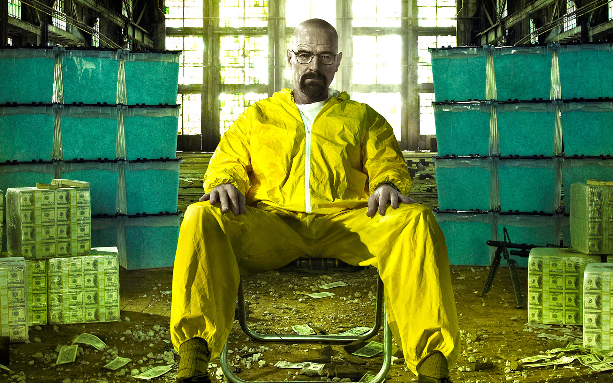
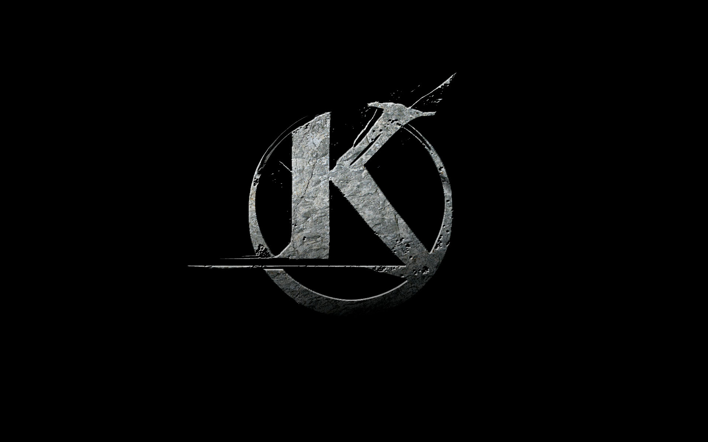
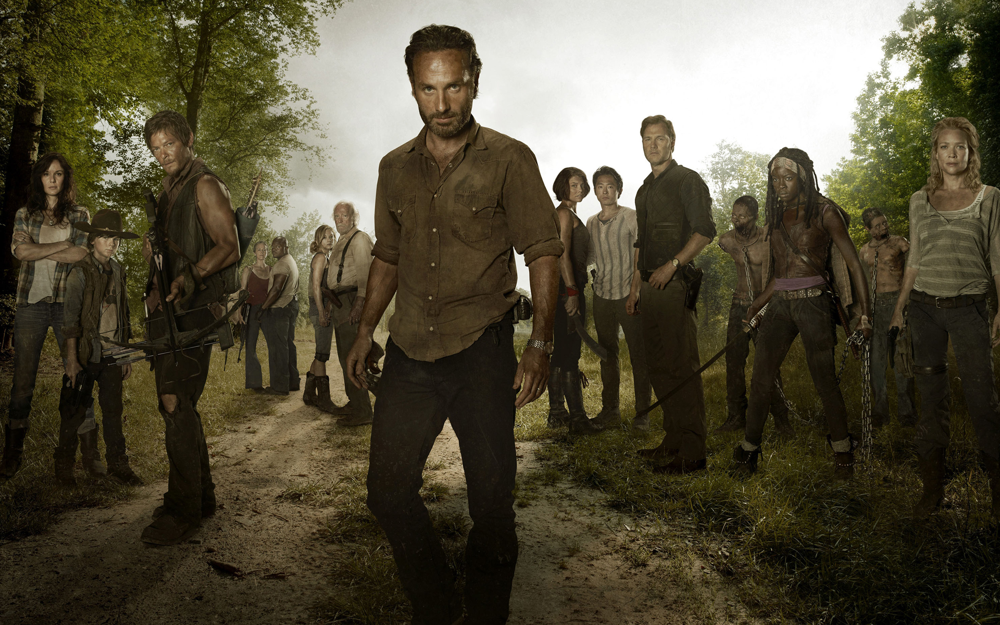

Breaking Bad

Kaamelott

The walking dead
Hi ! Vous êtes bien arrivé(e) sur mon Portfolio, petite présentation rapide. Je suis Jessy, j'ai 26 ans, j'aime l'informatique, le cinéma/séries, le dessin et la guitare ! Bonne navigation !